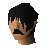

Wizard's mind bomb
| Config name | wizards_mind_bomb |
| Item id | 1907 |
| Value | 2 gp |
| Weight | 550g |
| Members | No |
| Tradeable | Yes |
| Stackable | No |
| Options | Drink |
| Category | alcoholic_drinks |
| Defined in | scripts/skill_cooking/configs/cooking_generic/cooking.obj |
Wizard's mind bomb
It's got strange bubbles in it.
Sold at
| Shop | Shopkeeper | Stock |
|---|---|---|
| The Toad and Chicken |  Tostig | 12 |
Quests
Referenced in scripts
scripts/_test/scripts/cheats/cheat_bank.rs2scripts/_test/scripts/debug/debug_quests.rs2scripts/areas/area_falador/scripts/barmaid.rs2scripts/quests/quest_death/scripts/death_guard_equiproom.rs2scripts/quests/quest_dragon/scripts/magic_door.rs2